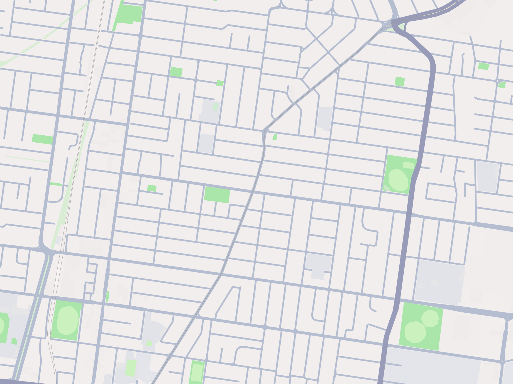
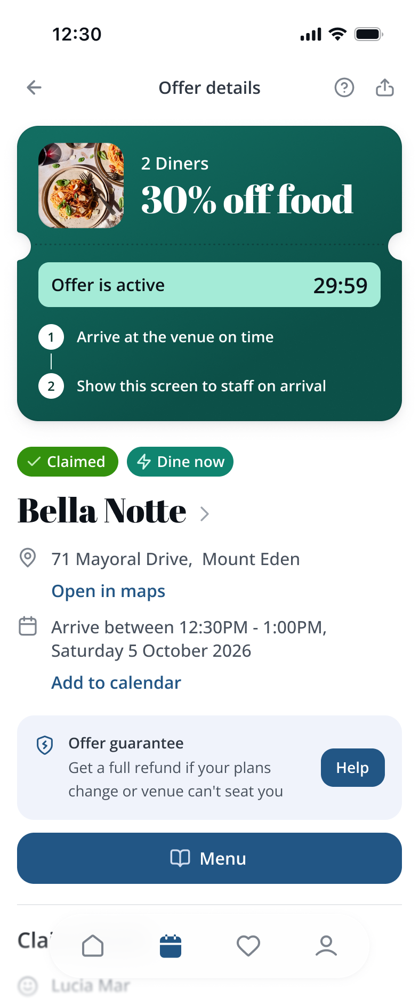

How Dine now works
Pick and claim an offer
Select a venue you like and claim a time slot
Arrive at the venue on time
You may lose the offer if you arrive late
Display your confirmation
Show your claim confirmation screen to a staff member to get the 30% off offer


Arrive between
12:30PM - 1:00PM
Offer activates in
34:59
Available right now
Nearby
Just walk in
Say hi!